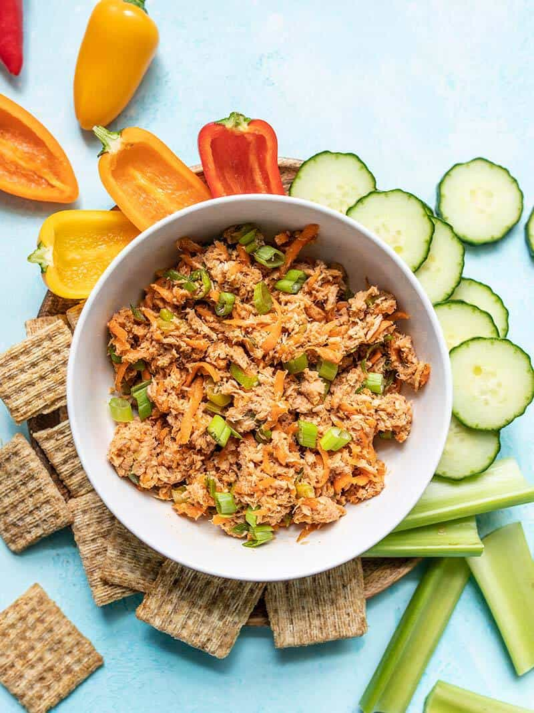

Spicy Tuna Salad

Ingredients
- 1 Canned Tuna
- 1 tablespoon Japanese Mayo
- 1 tablespoon sriracha, add as needed for spice level
- 1/4 cup cucumber
- 1/4 cup celery
Instructions
- Mix Mayo and siracha until desired flavour and spice reached, set aside
- cut cucumer, celery and mix together with tuna
- put in sauce and mix everything together
- serve with desired method
Return to Main Page